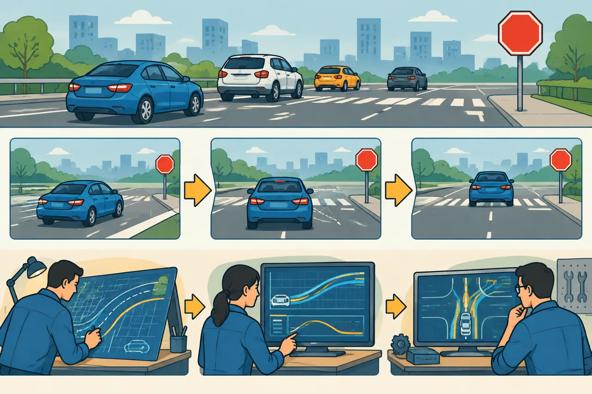

Unit 03 - Core Structure
Scenario、Stage 和 Task
用生活化模型理解三层结构，并阅读三个基类和 LaneFollow pipeline 配置。
学生自学版。本课建立 Planning 最重要的三层结构，不要求理解具体算法。
1. 学习信息
- 预计用时：80～120 分钟。
- 难度：入门。
- 前置：第 02 课。
- 代码基线：
d53aa3da47a06a08e6d0cd175d5623a34fa0d6aa。
2. 学完本课应能做到
- 用生活例子解释 Scenario、Stage、Task。
- 说明三者在代码中的继承关系。
- 找到
Scenario::Process、Stage::ExecuteTaskOnReferenceLine和Task::Execute。 - 阅读一个场景的 pipeline 配置。
- 解释为什么 Task 会按顺序执行。
3. 概念模型
flowchart TD
S["Scenario<br/>当前驾驶情境"] --> G["Stage<br/>当前处理阶段"]
G --> T1["Task<br/>路径任务"]
G --> T2["Task<br/>速度任务"]
G --> T3["Task<br/>决策任务"]
T1 --> R["ReferenceLineInfo<br/>共享中间结果"]
T2 --> R
T3 --> R
| 概念 | 一句话 | 生活类比 |
|---|---|---|
| Scenario | 当前属于什么驾驶情境 | 今天遇到停止牌路口 |
| Stage | 当前情境进行到哪一步 | 接近、停车、观察、通过 |
| Task | 这一阶段要完成什么工作 | 计算路径、检查障碍物、决定速度 |
关系：
Scenario
-> Stage
-> Task
-> Task
-> Task

| 文件 | 本课关注内容 |
|---|---|
modules/planning/planning_interface_base/scenario_base/scenario.h |
Scenario 基类 |
modules/planning/planning_interface_base/scenario_base/stage.h |
Stage 基类 |
modules/planning/planning_interface_base/task_base/task.h |
Task 基类 |
modules/planning/scenarios/lane_follow/conf/pipeline.pb.txt |
Stage 和 Task 顺序配置 |
modules/planning/scenarios/lane_follow/lane_follow_scenario.h |
LaneFollow 场景 |
5. Scenario 基类
源码位置：
modules/planning/planning_interface_base/scenario_base/scenario.h，约第 52～119 行。
// 源码位置：scenario.h，约第 52 行
class Scenario {
public:
// 判断是否允许从其他场景切换到当前场景
virtual bool IsTransferable(const Scenario* other_scenario,
const Frame& frame) {
return false; // 基类默认不允许切换
}
// 运行当前场景中的 Stage
virtual ScenarioResult Process(
const common::TrajectoryPoint& planning_init_point, Frame* frame);
// 当前正在执行的 Stage
std::shared_ptr<Stage> current_stage_;
// 配置中每个 Stage 名称对应的配置
std::unordered_map<std::string, const StagePipeline*> stage_pipeline_map_;
};
先理解两点：
- Scenario 管的是整个驾驶情境，不是某一个算法。
- Scenario 会选择并运行当前 Stage。
6. Stage 基类
源码位置：
modules/planning/planning_interface_base/scenario_base/stage.h，约第 42～93 行。
// 源码位置：stage.h，约第 42 行
class Stage {
public:
// 每个 Stage 必须实现自己的处理逻辑
virtual StageResult Process(
const common::TrajectoryPoint& planning_init_point, Frame* frame) = 0;
protected:
// 依次执行配置中登记的 Task
StageResult ExecuteTaskOnReferenceLine(
const common::TrajectoryPoint& planning_start_point, Frame* frame);
// 同一 Stage 中的任务列表
std::vector<std::shared_ptr<Task>> task_list_;
// 某个任务失败时使用的回退任务
std::shared_ptr<Task> fallback_task_;
};
= 0 表示纯虚函数。基类只规定接口，具体 Stage 必须实现 Process。
7. Task 基类
源码位置：
modules/planning/planning_interface_base/task_base/task.h，约第 37～70 行。
// 源码位置：task.h，约第 37 行
class Task {
public:
// Task 初始化时读取配置并保存依赖
virtual bool Init(const std::string& config_dir, const std::string& name,
const std::shared_ptr<DependencyInjector>& injector);
// 在指定参考线上执行任务
virtual common::Status Execute(Frame* frame,
ReferenceLineInfo* reference_line_info);
protected:
// 当前轮次的 Frame
Frame* frame_;
// 当前正在处理的参考线信息
ReferenceLineInfo* reference_line_info_;
};
一个 Task 通常只做一件具体事情，例如计算路径边界、检查交通灯或生成速度边界。
8. Stage 如何执行 Task
源码位置：
modules/planning/planning_interface_base/scenario_base/stage.cc，约第 101～145 行。
// 源码位置：stage.cc，约第 101 行
StageResult Stage::ExecuteTaskOnReferenceLine(
const common::TrajectoryPoint& planning_start_point, Frame* frame) {
// 依次取出 task_list_ 中的任务
for (auto task : task_list_) {
// 每个 Task 都接收同一个 Frame 和 ReferenceLineInfo
common::Status ret = task->Execute(frame, &reference_line_info);
// 某个 Task 失败，就结束当前任务链
if (!ret.ok()) {
break;
}
}
// 如果任务失败，执行回退任务
if (!ret.ok()) {
fallback_task_->Execute(frame, &reference_line_info);
}
}
关键结论：
- Stage 负责顺序和执行结果。
- Task 负责具体计算。
- Task 可以读写同一个 Frame 和 ReferenceLineInfo。
9. LaneFollow 的 pipeline 配置
源码位置：
modules/planning/scenarios/lane_follow/conf/pipeline.pb.txt，第 1 行起。
# 源码位置：lane_follow/conf/pipeline.pb.txt
stage {
name: "LANE_FOLLOW_STAGE" # Stage 运行名称
type: "LaneFollowStage" # 对应的 C++ 实现类
task {
name: "LANE_CHANGE_PATH" # 变道路径任务
type: "LaneChangePath"
}
task {
name: "LANE_FOLLOW_PATH" # 车道跟随路径任务
type: "LaneFollowPath"
}
task {
name: "PATH_DECIDER" # 路径决策任务
type: "PathDecider"
}
task {
name: "SPEED_BOUNDS_PRIORI_DECIDER"
type: "SpeedBoundsDecider" # 速度边界任务
}
task {
name: "PIECEWISE_JERK_SPEED"
type: "PiecewiseJerkSpeedOptimizer"
}
}
配置的作用：
告诉 Stage 创建哪些 Task，以及按什么顺序执行
10. 动手实验
rg -n "class Scenario|virtual bool IsTransferable|virtual ScenarioResult Process" modules\planning\planning_interface_base\scenario_base\scenario.h
rg -n "class Stage|task_list_|ExecuteTaskOnReferenceLine" modules\planning\planning_interface_base\scenario_base\stage.h modules\planning\planning_interface_base\scenario_base\stage.cc
rg -n "class Task|virtual common::Status Execute" modules\planning\planning_interface_base\task_base\task.h
Get-Content modules\planning\scenarios\lane_follow\conf\pipeline.pb.txt
画图：
LaneFollowScenario
-> LaneFollowStage
-> Task 1
-> Task 2
-> Task 3
11. 常见错误
- 把 Scenario 当成 Stage。
- 把 Task 当成普通函数，忽略它可能保存状态和配置。
- 以为 Task 自己决定执行顺序。执行顺序通常由 pipeline 配置决定。
- 以为 Task 失败后整个 Planning 一定崩溃。Stage 可能执行 fallback task。
12. 自测题
- Scenario、Stage、Task 分别回答什么问题？
- 为什么 Stage 需要
task_list_？ - 谁决定 Task 的执行顺序？
Task::Execute接收哪两个关键对象？- 纯虚函数
Process(...) = 0表示什么？ - Task 失败后可能发生什么？
- LaneFollow 场景中的第一个外部路径任务是什么？
- 为什么多个 Task 可以共享 Frame？
- Scenario 的职责是否等于路径生成？
- 用一句话概括三层结构。
13. 参考答案
- Scenario 回答遇到什么情况，Stage 回答进行到哪一步，Task 回答具体做什么。
- 它保存当前 Stage 需要执行的多个任务，支持按顺序循环执行。
- 通常由 pipeline 配置文件定义，Stage 按配置创建并执行。
Frame*和ReferenceLineInfo*。- 基类不给实现，派生类必须实现。
- 结束后续任务并执行 fallback task，或让上层进行安全降级。
LaneChangePath，然后是LaneFollowPath。- 它们共同处理同一轮规划数据，通过共享上下文读写中间结果。
- 不等于。Scenario 组织场景和 Stage，路径由具体 Task 生成。
- Scenario 管情境，Stage 管阶段，Task 管具体工作。
14. 过关检查
- 能用生活例子解释三层结构。
- 能找到三个基类。
- 能读懂 LaneFollow pipeline。
- 能说明 Task 失败时的 fallback。
- 十道题至少答对八道。
15. 下一课衔接
后面会开始补充 C++ 生存包。先学变量、函数、条件和循环，再学指针、引用、类和继承。